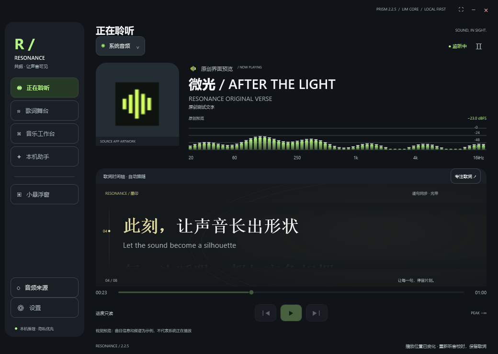
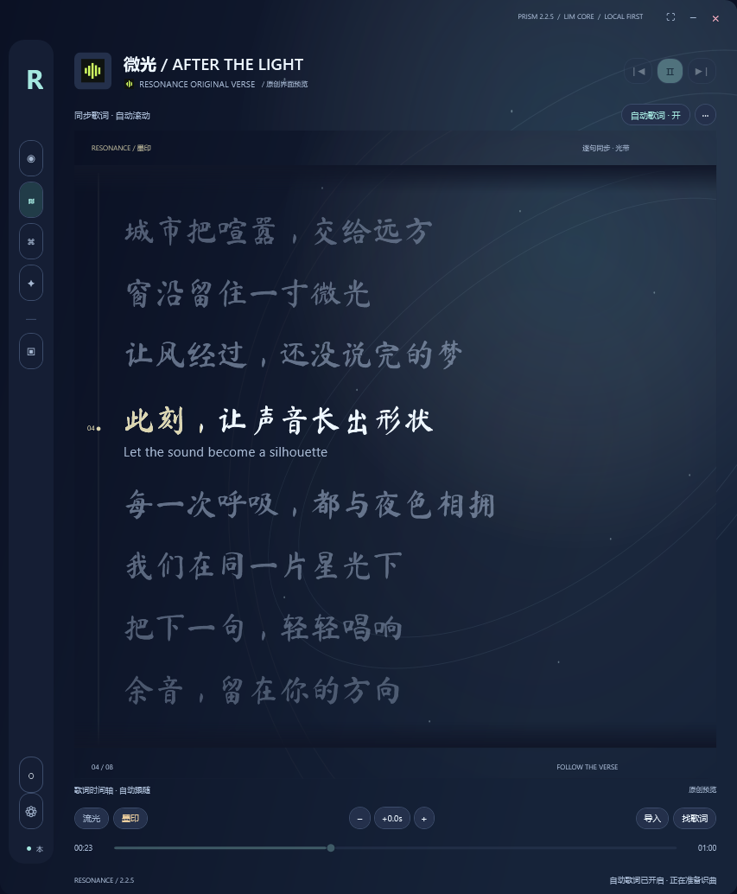
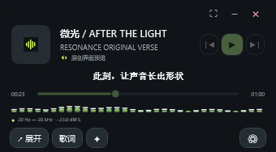

你在哪里播放，
就从哪里聆听。
音乐软件、浏览器、本地视频。来源列表自动刷新，支持选择应用或系统音频；改善浏览器子进程与多输出设备的发现和监听。
系统音频 / 应用音频 / 媒体信息PLAY WITH THE FEELING
频谱与文字，同一种呼吸。
换一种色调，看看音乐的另一面。
把喧嚣留在远处
让旋律经过此刻
每一次轻轻共振
都留下自己的颜色
01 / A WINDOW FOR SOUND
从完整的音乐工作台，
到桌面角落里的一行歌词。
让专注，刚刚好。

音频来源、频谱、封面与歌词放在一起。听到哪里，就看到哪里。
界面预览 · 原创演示文字
艺术滚动歌词，配上内测专属星轨与手写风字体。让文字也有自己的节奏。
界面预览 · 原创演示文字
340 × 188 · 实际界面预览频谱、歌词与播放控制，缩进桌面一角。小窗保持置顶，主窗口可以自然退到后台。
界面预览 · 原创演示文字预览来自软件真实界面；歌曲名及歌词为原创演示内容，不代表正在识别或播放的歌曲。
02 / BUILT AROUND YOUR LISTENING
音乐软件、浏览器、本地视频。来源列表自动刷新，支持选择应用或系统音频；改善浏览器子进程与多输出设备的发现和监听。
系统音频 / 应用音频 / 媒体信息来源没有提供歌名，也会继续通过音频识曲与本机听写寻找线索。找到可靠歌词就优先显示，暂时没有则由字幕补位；识别结果仍取决于曲库与音源。
自动查词 / 本机字幕 / 统一显示按播放时间整理录制片段，减少重复录制。支持时间信息的音源，可以逐步补齐缺失片段，再导出自己的记录。
片段排序 / 重复片段处理 / 本地保存在不同主题与歌词风格之间切换。从日常深色界面，到内测专属星轨，让音乐与桌面自然相融。
主题切换 / 艺术歌词 / 内测专属外观FROM SOUND TO WORDS
识曲与字幕，同时出发。
找到可靠歌词，就自然接上。
勾选正在播放的浏览器或音乐软件，也可以选择系统音频。继续用你熟悉的软件听歌、看视频。
由你选择监听来源优先利用可信的歌名与歌手信息，再结合本地缓存、参考指纹和可选在线查询。没有标题，也会继续听音寻找线索。
看线索，也听声音本机听写与识曲并行。还没有找到可靠歌词时，让实时字幕先补位；复杂演唱、对白或强伴奏可能影响准确率。
不必等识曲结束身份与版本匹配后自动寻找歌词，优先使用带时间轴的版本。可靠歌词接入统一显示；无法可靠对齐时保留非同步文字或字幕。
一处显示，自然切换这是软件的处理流程说明。识曲覆盖受参考曲库、录音版本与音质影响，不代表任意声音都能找到准确歌词；本机字幕也可能出现转录错误。
03 / LIM CORE
LOCAL FIRST字幕、翻译与音乐助手，
由你电脑里的模型协同完成。
专用模型负责听写，语言模型负责理解与整理。LIM CORE 按任务调度本机推理，让聆听与后台处理各就其位。
神经网络推理在本机完成。歌词与资料查询需要网络；在线指纹查询可选，具体数据使用可在软件中设置。
04 / GET RESONANCE
WINDOWS x64 · 小型联网安装器
一个安装器，内含启动与音频来源修复。
首次完整下载仍约 28.24 GB，全部功能与模型保留。
直接下载 EXE，可选择下载磁盘，内含启动与音频来源修复。首次安装仍下载约 28.24 GB 完整数据；已安装 2.2.5 可仅更新程序，无需重下模型。中国大陆网络尚未验证。
r6 安装器可选择下载磁盘，显示剩余空间，并保留自定义文件夹及断点续传。这里选择的是下载缓存；软件与共享模型仍使用当前 Windows 用户目录。
获取完整离线安装文件 28.53 GB / 全部模型 ↓已有完整 2.2.5：先完全退出共振，再选择“仅更新已安装程序”，无需重新下载模型。首次安装需要联网；推荐 Windows 11 x64，缺少 VC++ 运行库时需获取微软官方组件。
文件名：RESONANCE-2.2.5-Setup-r6.exe
最终文件大小：292,568,098 字节。以下摘要只用于小型联网安装器 EXE。
E47DCE0241F008E130F182BED5755AE97DB8C363A2B2F6CFE804CC97689DEC70下方提供完整离线下载清单。请准备 RESONANCE-2.2.5-Offline.exe 与全部 15 个 BIN，保留原文件名并放在同一文件夹。GitHub 自动生成的 Source code 不是安装包。 原离线 EXE/BIN 和 ZIP 是未改动的基础包，安装后仍需运行最新 Setup，选择“仅更新已安装程序”应用本次修复。
分卷校验：使用同次发布的 SHA256SUMS.txt 校验清单，逐个核对 EXE 与全部 15 个 BIN。不要混用不同发布的分卷。
以下摘要仅适用于完整 ZIP，不能用于校验 EXE 或 BIN。
完整 ZIP 文件名：RESONANCE-2.2.5-完整安装包.zip
仅此 ZIP 的准确大小：28,249,317,950 字节。GitHub 分卷发布无需下载或重建这个 ZIP。
92D03B8D80A8873DD24F1EAE8EA7870E1297908A34108C9D9195B012A9858FFBTHE COMPLETE COLLECTION
打开下载器，选好磁盘，自动下载并整理完整程序与全部模型。无需逐项点下载，安装时仍可选择最新版本或全版本。
先下载约 292.6 MB 的下载器，手动打开后选择磁盘并开始；随后自动获取约 28.24 GB 基础数据，逐项校验并整理为完整离线文件夹。不自动安装，不需要逐项点击。
完整下载约占 28.53 GB；安装还需约 31.11 / 32.78 GB 基础空间，加上修复、备份和临时文件。建议下载文件与程序分盘存放。
完整包会整理为同一个文件夹，包含 17 个安装文件及说明、校验清单。文件由 GitHub 分卷托管，无法提供单个 28 GB 文件；查看平台文件限制。
缺少微软 VC++ 运行库时，需提前准备官方组件；尚未在全部系统组合完成全程断网安装测试。新歌词和资料查询仍需网络，中国大陆下载可用性尚未验证。
05 / A LITTLE BEFORE THE FIRST LISTEN
安装说明就在这里。
更完整的使用手册，
也已放进软件。
直接获取 RESONANCE-2.2.5-Setup-r6.exe，内含两项修复。可核对官网公布的 EXE 大小与摘要。
首次安装下载约 28.24 GB 基础数据，再自动应用修复。已有完整 2.2.5：完全退出后选择“仅更新已安装程序”，不重下模型。
当前内测版首次使用可领取内测代码，请妥善备份。更新保留原有资格、API 密钥、录音和个人设置。
来源列表会自动刷新。勾选要监听的浏览器或播放器；即使没有歌名信息，也会继续尝试音频识曲和实时字幕。
默认按当前 Windows 用户安装，因此不一定出现“允许更改此设备”的提示。当前版本尚无商业代码签名，请核对来源与文件校验值。
06 / RELEASE NOTES
A FEW THINGS TO KNOW
关于安装、声音和本机 AI，
你可能想先了解这些。
可以。联网安装器第一页的“下载磁盘”会显示各盘剩余空间，选择后再开始下载；也可手动选择具体文件夹。它控制下载缓存，不改变当前软件与共享模型的安装目录。
点击开始后会记住所选缓存位置，已有有效缓存优先续传；不会为了换盘自动移动旧文件。若手动下载完整离线分卷，请先在浏览器设置中选择下载文件夹。
292.6 MB 是联网安装器，内含 r5 的启动与音频来源修复。首次安装还会下载约 28.24 GB 的完整基础数据，包括本机模型；全部当前功能保留，它不是完整离线包。
请同时预留下载缓存和安装空间。缓存可放到另一个磁盘；基础安装之外还需要更新、备份及临时空间。已安装完整 2.2.5 的用户可只更新程序。
一般选择最新版本：保留全部当前功能和模型，基础占用约 31.11 GB，不影响正常使用。全版本基础占用约 32.78 GB，额外保留基础包中的历史版本，适合想体验旧设计的用户。
这两个数字都是基础占用。本次修复约新增 0.23 GB 程序对象，恢复备份、缓存和临时文件另计。
不需要。先从软件或托盘中完全退出共振，再运行最新安装器，选择“仅更新已安装程序”。r5 的两项修复已经放进安装器，不会重新下载约 28 GB 基础数据。
更新会校验原文件，并保留原有模型、历史版本、API 密钥、内测资格、录音与设置。建议另外备份自己的内测代码。
先在来源设置中勾选该浏览器或播放器，或者选择系统音频；仅勾选其他软件时，不会自动监听 Edge。来源列表会自动刷新。
没有歌名不代表没有声音。软件仍会尝试音频识曲和本机字幕，但识曲覆盖取决于参考曲库与缓存。现场版、混音、对白和强伴奏会增加难度；来源不支持的进度或切歌控制会禁用。
神经网络推理在电脑本机完成。本机听写、音频监听、频谱、录制，以及已有的本地歌词和识别缓存可以离线使用。
新的在线歌词和歌曲资料需要网络。可选在线指纹查询会发送指纹及查询信息，不等于上传原始录音；可在软件中关闭。仅使用本地识曲时，覆盖范围受已经导入的参考曲库限制。
推荐 Windows 11 x64。安装允许 Windows 10 2004 及以上的 x64 系统，但按应用监听需要构建号 20348 或更新；较旧系统可尝试系统音频。受保护、独占或绕过系统混音的音源可能无法捕获。
支持的 GPU 可以加速部分本机推理，也提供 CPU 回退。CPU 模式可能明显更慢，各模型所需内存和显存不同；目前尚未完成所有硬件组合的最低配置验证。
当前内测版提供内测代码，用于后续版本导入内测资格及相关专属外观，包括星轨背景与手写风歌词。
请在软件中单独备份代码，换电脑或清理用户数据前妥善保管。正常更新会保留原有资格；安装包不会包含作者或其他用户的密钥、代码与个人资料。
官网和安装文件由 GitHub 托管。中国大陆不同地区、运营商的实际可用性与速度尚未验证，不能保证稳定访问；网页能打开也不代表安装文件的下载服务器一定可达。
安装器支持进度显示、暂停与续传。已有完整 2.2.5 时优先选择“仅更新已安装程序”，避免重复下载模型。请使用本页正式下载入口，并核对文件名与 SHA-256。